Energy Management Personnel Online Training Course
Comprehensive course covering energy management regulations, ISO 50001 systems, energy-saving diagnostic techniques, and AI applications. Includes 49 professional videos, complete subtitles, and structured summaries.
This unit establishes participants' foundational awareness of energy management and net-zero transformation trends, understanding that energy conservation is no longer merely an operational cost, but a key entry pass to sustainable operations and international green supply chains.
- Through 5 years of collaboration between CNFI and Delta Electronics, energy courses have gained broad industry response
- 2050 Net-Zero Target: CNFI unites 143 unions to promote energy conservation and carbon reduction policies
- Energy conservation is the entry ticket to sustainable operations, not just a corporate burden
- Delta's technical capabilities and professional instructor teams transform technology into education
- SMEs gain access to international-standard energy knowledge through these courses
- Combining automation and energy conservation helps Taiwan's manufacturing build resilient, intelligent green supply chains
This unit emphasizes that energy management has shifted from "cost burden" to "entry ticket for sustainable operations." Through industry-government-academia cooperation, it helps Taiwan's industries—particularly SMEs—master international-standard energy-saving technology for the 2050 net-zero goal.
Macro understanding of global energy landscape transformation—from buildings, industry, to AI data centers—analyzing key opportunities and challenges for energy efficiency improvement.
- Global energy transition from fossil fuel-dependent centralized systems to distributed, low-carbon structures with electrification
- Solar and wind power costs dropped 80%+ in a decade, becoming cheapest electricity sources in many regions
- Buildings consume ~40% of global energy; passive design (insulation, natural ventilation) plus active systems can save 50-90%
- AI computing and data centers are fast-growing power consumers requiring full optimization from chip design to cooling and power management
- Systematic energy diagnosis: analyze from system perspective, e.g., pipeline path optimization reducing pump friction loss by 30%+
- Government policies (carbon pricing, renewable targets, building codes) strongly drive energy transition
- Energy efficiency is the cheapest "energy source"—cost far below new power plants with multiple benefits
- Passive building design: building orientation, thermal envelope, shading, natural ventilation reduce HVAC/lighting loads without added cost
- Grid resilience with renewables requires storage systems, V2G, and demand response for smart grid
- Pump and fan optimization via variable frequency drives, larger pipes, fewer elbows—among fastest ROI measures
Grid resilience planning requires storage (gas turbines, pumped hydro) combined with AI-optimized dispatch. Building-integrated photovoltaics, wind, and EV V2G create distributed energy resources.
Establishes "systematic energy conservation" macro vision. True energy conservation isn't about expensive new technology but precise system diagnosis, optimized design logic, and pragmatic engineering—achieving maximum benefit at minimum cost.
Explains how global warming directly impacts building energy consumption, teaching participants to use weather forecasts and real-time monitoring data to optimize HVAC operations—achieving significant energy savings without equipment replacement.
- Global warming: every 1°C outdoor temperature rise increases AC power by 6% to 15.5%
- Chiller systems account for ~60% of total building electricity; operational optimization can achieve 36% energy savings
- Keelung Maritime Museum: pre-cooling strategy shifted chiller startup to off-peak, reducing peak demand 8%, demand charges 20%
- Shulin Arts Building: dynamic temperature adjustment based on forecasts achieved 9.67% total AC electricity savings
- Delta Plant 5: automated weather-prediction-based pre-cooling integrated with outdoor air and ice storage, saving 210,000+ kWh/year
- Four key steps: Data Collection → Model Building → Decision Making → Automatic Control
- GreenBIM platform provides 3-day hourly forecasts, ASHRAE climate design conditions, and solar data
Proves "operational energy conservation" is an immediate and effective carbon reduction path. Building managers need not invest heavily in equipment upgrades—only change electricity behavior and operational strategies.
Comprehensive understanding of Taiwan's GHG Voluntary Reduction Program structure and mechanisms, including regulatory background, application process, reduction methodologies, and international carbon market connections.
- Voluntary Reduction Program allows enterprises to convert actual GHG reductions into "reduction credits" (carbon credits)
- Regulatory basis: Climate Change Response Act, key policy tool for Taiwan's 2050 net-zero goal
- Process: Registration → Implementation → Monitoring → Third-party Verification → Credit Issuance
- Must use Ministry-approved methodologies: energy efficiency improvement, fuel substitution, renewable energy, waste methane recovery
- Carbon leakage risk and "additionality" must be demonstrated—ensuring credits represent real, additional environmental benefit
- Connects to international carbon markets (Paris Agreement Article 6); credits can be used for international cooperation or trading
- Reduction credits can offset corporate emissions, support voluntary carbon neutrality claims, or be traded in future carbon markets
- Common methodologies: LED lighting replacement, AC system efficiency upgrades, boiler fuel switching from heavy oil to natural gas
Builds systematic understanding of the Voluntary Reduction Program as a strategic path for low-carbon transformation and green economic value—not just regulatory compliance, but market competitive advantage.
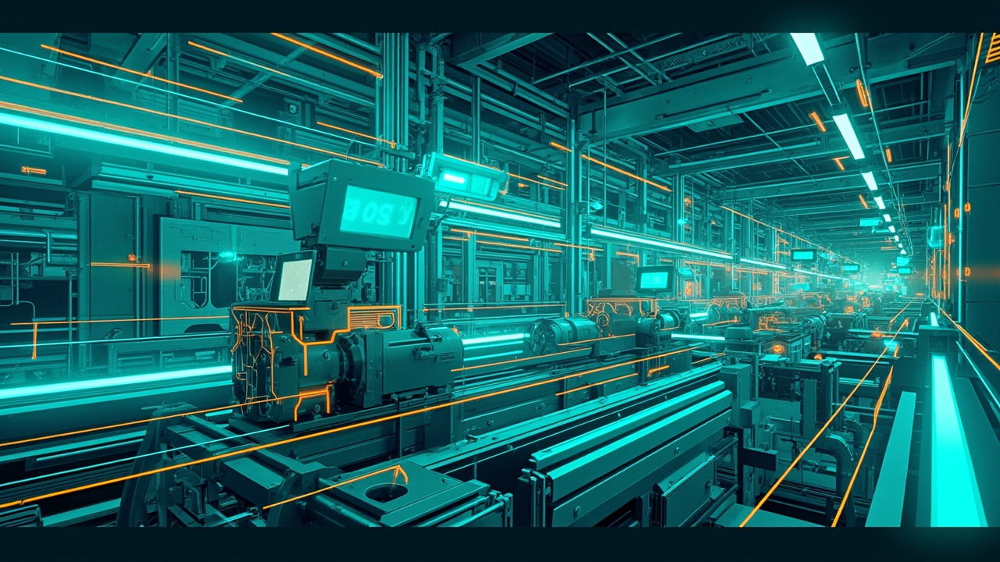
Comprehensive understanding of Taiwan's energy management regulatory framework—from the Energy Management Act as the parent law to sub-laws, administrative orders, and climate change regulations.
- Designated energy users: contract capacity ≥800 kW must comply with energy audit, conservation target, and reporting requirements
- Energy flow classification: electricity, coal, natural gas, oil products must be classified by use (lighting, power, HVAC, refrigeration)
- Conservation targets and implementation plans must be filed with the Ministry of Economic Affairs for approval
- Annual energy use reporting due by January 31 (report previous year's data)
- Commercial equipment must display energy efficiency labels; penalties up to NTD 100,000 for violations
- New buildings must comply with energy conservation standards; central AC systems >1,000 tons require independent meters
- Service industry uses floor-area energy intensity indicators; manufacturing uses unit-product energy consumption
Systematically introduces Taiwan's complete energy management regulatory framework. Regulations are not just minimum compliance thresholds but important tools for driving energy conservation, cost reduction, and sustainable development.
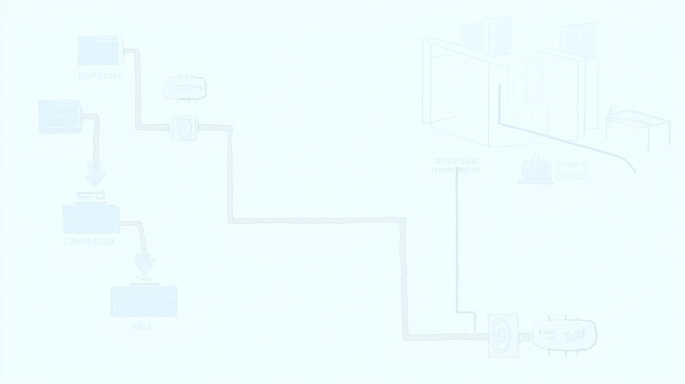
Master the regulatory basis, reporting subjects, and procedures for energy audit reporting, and become proficient in operating the reporting system and correctly filling out all required forms.
- Reporting period January-March annually; divided into "production" and "non-production" categories with different forms
- System automatically imports Taiwan Power Company data; users must verify and manually supplement other energy sources (fuel, gas)
- Energy flow balance: total purchased energy must equal sum of all end-use allocations, critical for diagnosing efficiency
- Unit product energy consumption must be compared year-over-year; significant changes require explanation
- Diagnosis methods: establish energy audit organization → measure and record energy use → regularly inspect major equipment efficiency → analyze energy flow balance → identify anomalies and propose improvements
Transforms complex energy management regulations into concrete, actionable steps. Reporting becomes an opportunity for organizational energy health checks, uncovering efficiency bottlenecks and improvement potential.
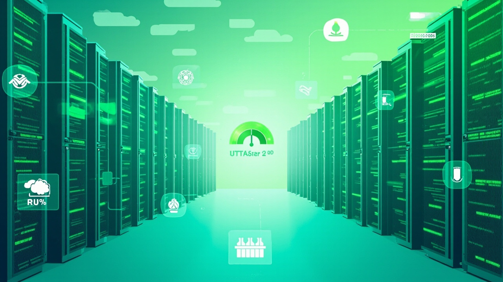
Deep understanding of ISO 50001:2018 core framework and requirements, with practical case studies demonstrating how to apply the standard to organizational energy management.
- ISO 50001:2018 emphasizes PDCA (Plan-Do-Check-Act) cycle for continuous energy performance improvement
- Core elements: Energy Policy, Energy Planning, Energy Baseline (EnB), Energy Performance Indicators (EnPI), Data Collection
- Energy Baseline (EnB) serves as quantitative reference for comparing pre/post energy performance, must be updated for significant changes
- EnPI quantifies energy performance; simple type (unit product consumption) vs. complex type (regression model)
- Energy Review identifies Significant Energy Uses (SEU) and improvement opportunities
- Internal audits and management reviews confirm system effectiveness and identify improvement opportunities
- Government subsidies and programs (e.g., Energy Conservation Performance Guarantee Program) support enterprise implementation
Master systematic thinking and practical application of ISO 50001:2018—from policy setting and data analysis to performance evaluation and continuous improvement—establishing an operational management framework.
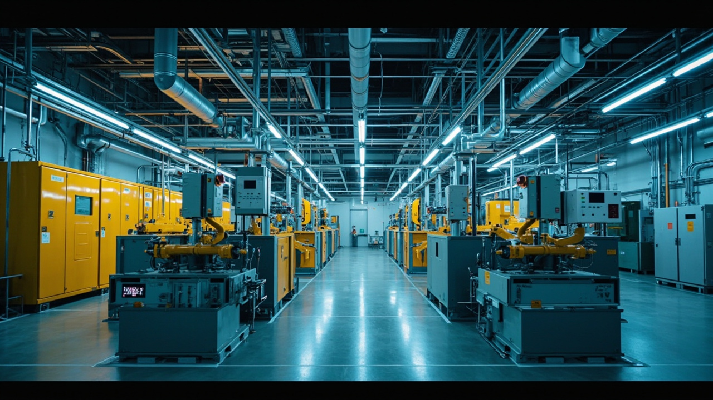
Establish foundational energy literacy: clarify common units, symbols, and terminology; master power vs. work, demand vs. contract capacity, power factor, and fuel heating value concepts.
- Power (kW) vs. Work (kWh): Power is rate (like speed), Work is accumulation (like distance); power × time = work
- Demand: average effective power over 15-minute interval, key basis for electricity pricing
- Contract capacity: maximum power agreed with utility; exceeding triggers penalty charges
- Power factor: ratio of active to apparent power; most industrial equipment is inductive load
- Fuel heating values vary by source and region; obtain data from suppliers or energy authority handbooks
- Special gases (blast furnace gas, coke oven gas) and secondary energy (steam, compressed air, chilled water) require specific conversion factors
- Unit prefixes (k, M, m, c, ppm) must be mastered to avoid 1000× or 10⁶× errors
Establishes correct concepts of energy units and calculations, preventing errors from unit confusion or unclear definitions, enhancing accuracy and professionalism in energy diagnosis and quantification.
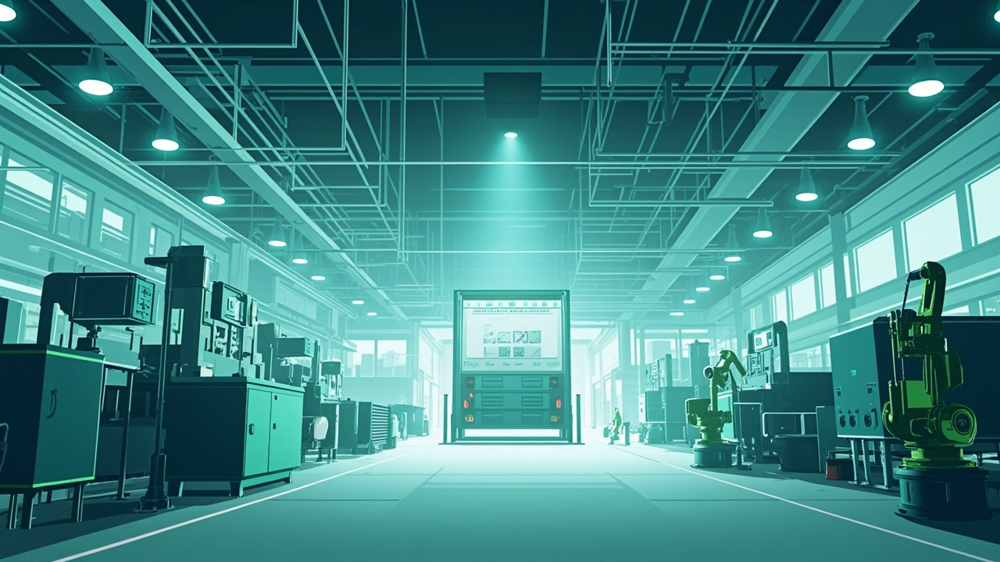
Systematic thinking for factory energy diagnosis: learn scientific diagnostic methods from equipment, process, and management perspectives to identify energy-saving potential and propose feasible solutions.
- Diagnosis process: Data Collection → Site Survey → Measurement → Data Analysis → Solution Writing
- Equipment efficiency evaluation focuses on "operating state" and "load rate"—efficiency drops significantly at low or variable loads
- Heat recovery: use heat exchangers to recover boiler exhaust, wastewater, or process waste heat for water/air preheating
- Compressed air systems: leak reduction (20-30% loss typical) and pressure setting optimization
- Chiller optimization: raising chilled water temperature 1°C saves ~2-3% electricity consumption
- Boiler efficiency primarily affected by exhaust temperature and excess air ratio
- Variable frequency drives (VFD) for motors and pumps with variable loads—avoid throttling with valves
- Process parameter optimization: bath ratios in dyeing, cylinder temperatures in papermaking
- Power quality management: power factor and harmonic issues; improvement reduces line loss and penalties
- Energy Management Systems (EMS) enable long-term data collection for trend analysis and anomaly warning
Establishes systematic, data-driven, pragmatic energy-saving diagnosis thinking. Not relying on experience alone, but using on-site measurement and data analysis to precisely identify energy waste.
Complete cognition from planning to execution and performance quantification. Learn to correctly set baseline and post-improvement scenarios, select appropriate quantification methodologies, and produce verifiable energy-saving performance results.
- Energy savings is "work" not "power": must multiply power (kW) × operating hours (h) = work (kWh)
- Performance quantification requires clear "pre/post improvement" scenario definitions
- Quantification methodology depends on intended user: internal, Bureau of Energy audit (annual 1% target), or ISO 50001 certification
- ISO 50001 strictly requires data quantification, measurement methodology, data quality, and sources
- Six major aspects: equipment efficiency, load factor adjustment, heat/cold recovery, renewable energy, operational parameter adjustment, load management
- Documentation requirements: resources, timeline, responsible personnel, and verification methods must be clearly recorded
- Common quantification methods: pre/post total heat difference, unit product consumption (kWh/unit), direct meter measurement
- Linkage: energy savings → carbon reduction (via emission factors) → cost savings (via energy prices and carbon pricing)
Establishes rigorous and verifiable energy management scheme planning and execution logic. Successful schemes are not just technology application but a systematic process from data collection to documentation.
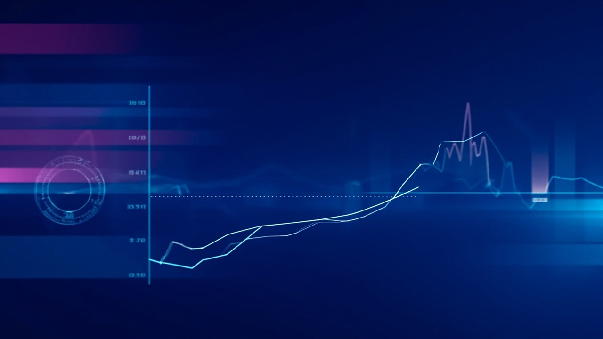
Understand key documents and processes for "Implementation & Operation" in energy management systems, and deeply master methods for establishing Energy Baseline (EnB) and Energy Performance Indicators (EnPI).
- EnB serves as quantitative reference baseline for comparing energy performance pre/post improvement; must be updated for significant changes
- EnPI (Energy Performance Indicator) quantifies energy performance: simple type (unit product consumption) vs. complex type (regression model)
- EnPI selection considerations: correlation with energy consumption, quantifiability, accuracy, reflection of actual operations
- Regression analysis establishes mathematical relationship between energy consumption and major influencing factors (production, temperature)
- Static factors (factory size) are long-term constants; correlated variables (production, weather) significantly affect consumption
- After major measures, new EnB must be re-established as future performance evaluation baseline
- R² (coefficient of determination) evaluates regression model explanatory power—closer to 1 means better predictive ability
Establishes scientific, objective energy performance measurement system. Using data analysis and statistical tools to precisely quantify actual contribution of energy-saving measures, elevating energy management from passive cost control to active performance management.
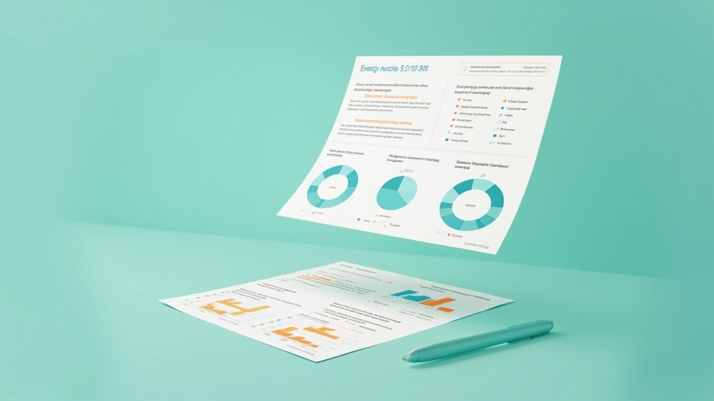
Learn to write energy audit reports with data accuracy, measure reasonableness, and implementation feasibility—mastering energy flow analysis, equipment consumption estimation, and measure quantification techniques.
- Data accuracy is the foundation: energy use, purchase quantity, types, and flows must be correct and consistent with audit form data
- Energy flow diagrams (electricity and thermal) and equipment consumption lists with specifications, operating hours, and load rates
- Operating hours and load rates affect allocation accuracy—errors cause energy flow distribution distortion
- Quantification can reference official databases: Energy Bureau "Energy Conservation Garden," Industrial Development Bureau platforms
- Average electricity price and ROI calculations must be consistent throughout the report
- Three-tier report review: basic score for data reasonableness, excellent for evaluation reasonableness, perfect for implementation feasibility
- Equipment details and system diagrams assist evaluation: specifications, acquisition date, startup modes, photos
Establishes systematic thinking and rigorous attitude for writing energy audit reports. Mastering data accuracy, energy flow analysis, measure quantification, and consistency principles produces professional-standard reports that effectively persuade decision-makers.
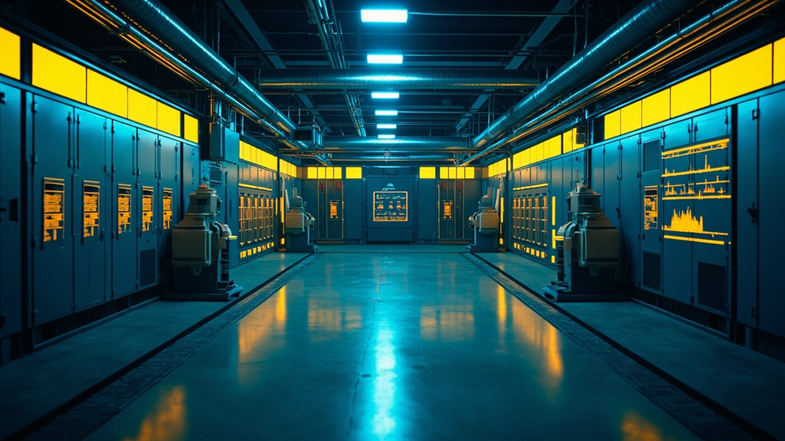
Systematic cognition for power distribution room diagnosis: from understanding electricity bill components (contract capacity, time-of-use pricing, power factor) to mastering data analysis methods for identifying energy-saving potential.
- Demand is average effective power over specific period (15 min); exceeding contract capacity triggers penalty charges
- Time-of-use pricing: utility divides day into peak, partial peak, off-peak periods; shifting high-consumption equipment to off-peak reduces costs
- Power factor improvement: below 80% incurs charges, above 80% earns rebates; capacitor banks are common effective measure
- Electricity bill structure: basic charge (contract capacity) + variable charge (actual consumption × time-of-use price) + power factor adjustment + excess demand charges
- Contract capacity optimization: reference past year (especially summer) maximum demand, balance between penalty avoidance and cost waste
- Demand control strategy: use demand monitoring system for real-time awareness; implement load shedding or reduction when approaching limit
- High-voltage vs. low-voltage users have different electricity pricing structures; diagnosis focus differs accordingly
- Access Taiwan Power's "High-Voltage User Service Network" for historical 15-minute demand records
Establishes complete diagnostic logic "from reading electricity bills to proposing energy-saving schemes"—using data analysis to precisely identify highest cost-effectiveness improvement opportunities in distribution rooms.
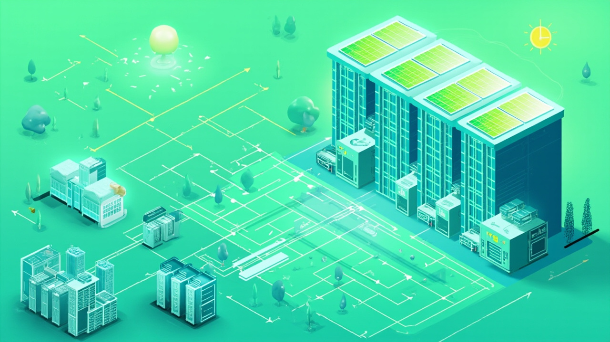
Master core methods and evaluation tools for information room sustainability diagnosis, including energy efficiency indicators, cooling system design, PUE, and environmental sustainability trends.
- PUE (Power Usage Effectiveness) = Total Facility Power / IT Equipment Power; ideal value close to 1.0, lower is better
- Cooling systems: air cooling, liquid cooling, immersion cooling; diagnosis focuses on cooling load matching, hot/cold aisle containment, fan/pump efficiency
- Deploy temperature, humidity, pressure, and airflow sensors for real-time monitoring of cabinet intake/exhaust temperatures to avoid hotspots
- Taiwan and international regulations increasingly require data centers to disclose energy use and carbon emissions
- Diagnosis tools: infrared thermal cameras, airflow visualization tests, PDU/EMS power monitoring, simulation software
- Equipment selection: prioritize high-efficiency UPS, variable frequency AC, high-efficiency servers; consider rack layout, hot/cold aisle separation, floor cutout rate
- Common blind spots: ignoring partial load efficiency, airflow short-circuiting, lack of continuous monitoring
- Cases achieving PUE improvement of 10%+ through cooling system optimization and equipment upgrades
Establishes systematic thinking for information room sustainability diagnosis—from energy efficiency indicators and cooling technology to monitoring tools and regulatory trends—providing actionable diagnostic processes and improvement strategies.
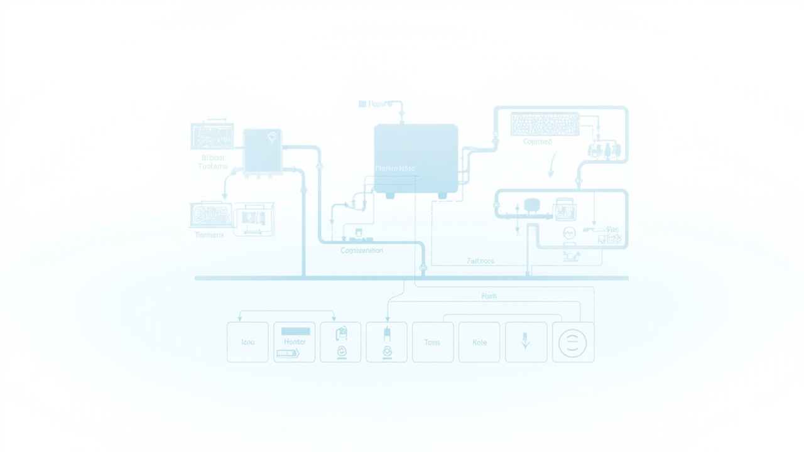
Master HVAC system energy diagnosis methods: understand system composition, operating principles, and common energy consumption problems; identify energy-saving potential from equipment efficiency, control strategy, and maintenance management perspectives.
- HVAC major energy consumers: chillers, cooling towers, chilled water pumps, cooling water pumps, AHUs
- Chiller efficiency: measured in kW/RT; efficient units ~0.6-0.8 kW/RT; poorly maintained units exceed 1.0 kW/RT
- Every 1°C reduction in cooling water temperature improves chiller efficiency ~2-3%
- "Large temperature difference, small flow" design principle reduces pump energy consumption
- AHU supply/return air temperature difference too small may indicate excessive airflow or coil inefficiency
- Indoor air quality (IAQ) must be balanced with energy savings; recommend constant temperature/humidity (24°C, 55%RH)
- Diagnosis tools: power analyzers, temperature loggers, pressure gauges, anemometers, infrared cameras
- Partial load efficiency more important than full load efficiency; choose variable frequency chillers or multi-chiller control
- Cooling tower approach temperature ideally below 3°C; scale buildup adds 5-10% electricity consumption per 1mm
Establishes "data-driven energy diagnosis thinking"—enabling systematic measurement, analysis, and comparison to identify real energy-saving opportunities, effectively reducing HVAC energy consumption by 20-40%.
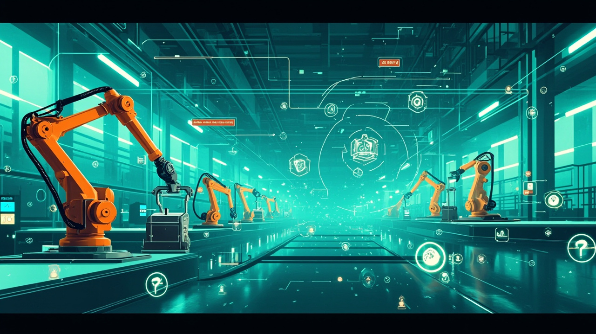
Master current mainstream trends and practical applications for factory energy-saving technologies, especially for chillers, cooling towers, pumps, and HVAC systems—achieving significant energy savings through variable frequency control, system optimization, and precise diagnosis.
- Chiller system trends: variable frequency control for pumps and chillers, using chilled water temperature and pressure differential control instead of traditional valve throttling
- Cooling tower strategy: wet-bulb temperature-based fan speed control to avoid overcooling; group control logic maintains optimal efficiency range
- Pump diagnosis: check operating efficiency against pump performance curve and system impedance curve to assess variable frequency transformation potential
- VFD benefits: smooth speed regulation plus "soft start" function avoids water hammer and pipe vibration; attention to motor cooling at low frequencies
- AHU energy-saving: outdoor air cooling strategy when outdoor conditions are suitable; VAV control adjusts airflow based on space demand
- High-efficiency motors: IE4 or IE5 grade super-efficiency motors (e.g., permanent magnet synchronous motors) significantly reduce iron and copper losses
- Chiller load management: automated loading/unloading based on actual load demand, maintaining 70%-90% high-efficiency load range
- Pipeline system optimization: reduce unnecessary elbows, valves, pipe diameter reductions; network balancing adjusts regional flow distribution
Establishes "systematic energy-saving" thinking—from single equipment efficiency improvement to whole-system integration optimization. Mastering variable frequency control, group control logic, outdoor air cooling, and diagnosis tools brings significant energy cost reduction and carbon reduction.
Understand how AI technologies apply to energy conservation and carbon reduction in buildings and factories—particularly through AI-based HVAC optimization control, equipment efficiency diagnosis, and predictive maintenance.
- Digital Twin models simulate HVAC system behavior under different operating conditions for optimal control
- Fuzzy Control: "If...Then..." rule-based intelligent control logic handles uncertainty and nonlinear systems for smoother, more energy-efficient temperature regulation
- Predictive Control: AI models predict future loads and environmental changes, adjusting equipment parameters in advance
- AI model training process: collect historical data → deep learning/neural network training → deploy to field controllers for real-time control
- EER (Energy Efficiency Ratio) = cooling capacity (kW) / power input (kW); higher is better; CSPF considers seasonal operation
- Smart Valve Positioning: AI automatically learns and corrects control valve opening/flow characteristics, solving control accuracy problems from wear
- BEMS integration: AI energy-saving technology integrates with Building Energy Management Systems via sensors, enabling remote monitoring and automated control
- Storage systems (batteries, ice storage) charge during off-peak, discharge during peak for "peak shaving and valley filling," reducing contract capacity and electricity costs
AI is not an unreachable technology but a powerful tool for daily energy management. Data-driven modeling and intelligent control can achieve 5% to 30%+ significant energy savings while improving system stability and predictive capability.